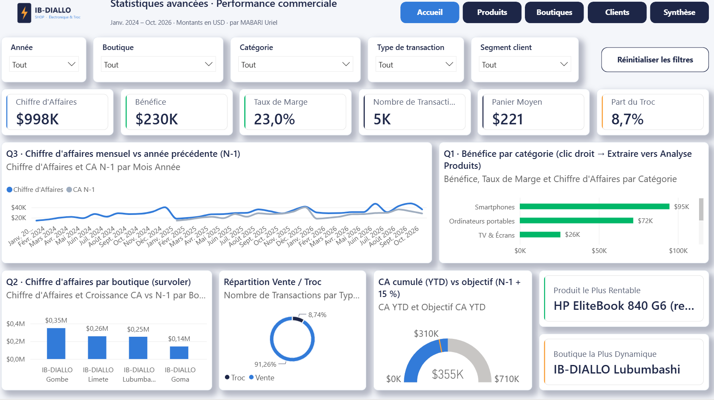
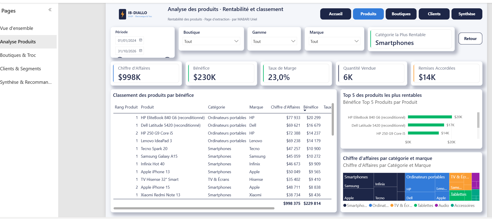
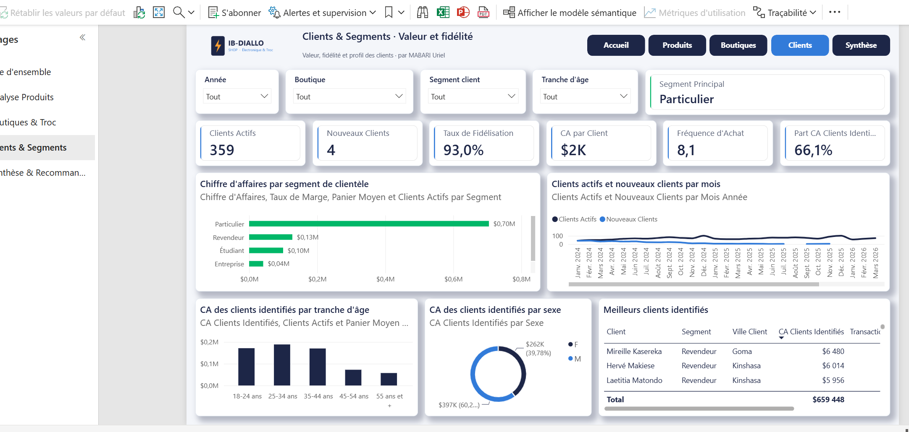
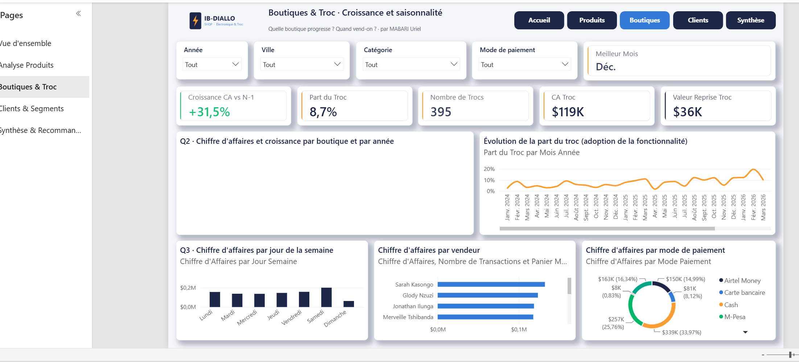
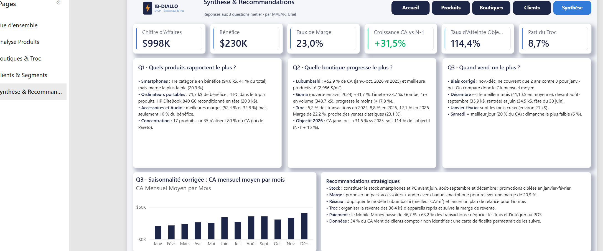

⭐ Projet de certification Power BI
Analyse commerciale d'une chaîne de boutiques d'électronique
Rapport Power BI complet de 6 pages pour piloter les ventes de 4 boutiques d'électronique sur près de 3 ans (janvier 2024 à octobre 2026) : chiffre d'affaires, bénéfice, clients, produits, vendeurs et programme de reprise d'appareils (troc). Le rapport répond à 3 questions métier et se termine par des recommandations concrètes.
998 K$CA analysé
230 K$Bénéfice
+31,5 %Croissance vs N-1
114 %Objectif atteint
- Modèle en étoile : une table de faits Transactions et 5 dimensions (Boutique, Calendrier, Client, Produit, Vendeur)
- Plus de 35 mesures DAX : CA, bénéfice, taux de marge, CA YTD, CA N-1, croissance, panier moyen, fréquence d'achat, taux de fidélisation, classement des produits
- Objectif dynamique : CA cumulé comparé à un objectif N-1 + 15 %, avec jauge de taux d'atteinte
- Analyse du troc : part du CA réalisée par reprise d'appareils et suivi de son adoption dans le temps
- Expérience utilisateur : boutons de navigation, page d'infobulle personnalisée, couleurs conditionnelles, réinitialisation des filtres
Power BIDAXTime IntelligenceModélisationPBIPUX / Storytelling





Cliquez sur une capture pour l'agrandir.